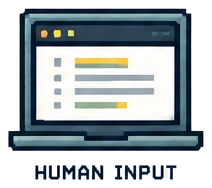

Defines the quality question.
Human Evaluation + QA
AI Training and Evaluation
I build evaluation systems that make AI quality visible: frame the job, choose the right evaluation lens, apply clear rubrics, calibrate judgment, and turn findings into useful next steps.
Writing + Content ReviewDesign + Aesthetics ReviewRubric DesignCalibrationQA Feedback
Why AI Evaluation Is Different
AI output can sound polished and still be wrong for the job.
AI evaluation is not a general impression of whether an answer is good. It starts with a defined task, the evidence or reference system the output is allowed to use, the intended audience, and one evaluation lens at a time.
The same response can be clear but unsupported, source-faithful but incomplete, or visually polished but difficult to use. Separating those questions keeps personal preference from quietly becoming the standard.
Defines what weak, partial, and strong performance look like.
Names the specific evidence that affects a judgment.
Checks whether trained reviewers reach comparable conclusions.
Human Evaluation + Training
Turn quality judgment into a repeatable practice.
Most AI evaluation programs make judgment teachable. They give reviewers the task context, examples, score anchors, and feedback patterns needed to make comparable calls instead of relying on a thumbs-up or thumbs-down reaction.
Frame the job
Define the task, audience, required elements, allowed evidence, and exclusions.
Build the rubric
Turn expectations into observable criteria and anchored score levels.
Practice + calibrate
Compare example judgments, discuss disagreement, and clarify the standard.
Evaluate + explain
Stay on the assigned lens, cite evidence, then score or rank with a fresh rationale.
Improve the system
Use recurring patterns to refine prompts, examples, rubrics, instructions, or the experience.

How I contribute: I build the practical pieces that make this work usable: review packets, scenario practice, evidence trails, rubric language, benchmark comparisons, and feedback that makes the reason for a decision clear. The public demos below use fictional, sanitized scenarios to show the approach without exposing private evaluation material.
Content-Type Rubric Explorer
Different AI-generated work needs different standards.
Choose a content type to see the specific question, evidence boundary, and rubric pattern that guide the review. A clear writing check is not a source-grounding check, and neither replaces an experience review.
Writing Quality
Does a standalone response read clearly and hold together?
MINI RUBRIC DEMOCompare like-for-like outputs
The checks below define the standard. A relative rank only compares outputs completing the same task.
From Observation to Decision
A defensible AI evaluation has five parts.
A lens defines the question. A rubric defines the standard. A quality signal is the evidence. The rationale explains why it matters, and calibration checks whether the judgment is consistent.
Select a step to see how an evaluator turns an observation into a decision another reviewer can follow.
01 / Assigned lens
Start with one question.
Evaluator move
Hands-On, Public-Safe Demos
Practice the evaluator work.
These fictionalized labs make the reasoning visible: diagnose a text output against its task and source, apply an anchored rubric, then follow the full human QA loop from assignment to calibration.
Text + Source Review
Evidence-Led Review Lab
Review fictional model outputs against a task and approved source, identify the signal, choose severity, then compare your reasoning with a benchmark.
Open Text Review Lab →Rubric + Calibration
Anchored Rubric Studio
Score a criterion using clear anchors, then compare the score and rationale with a benchmark built for the same evaluation job.
Open Rubric Studio →Evaluation Operations
Human QA Workflow
Move from assignment framing to evidence verification, issue diagnosis, calibrated judgment, and reusable feedback for the next review cycle.
Open QA Workflow →Other Work
AI quality connects to the rest of the learning system.
Evaluation work sits beside the learning, platform, and systems work that makes a complete enablement experience possible.
Learning Design
Instructional Design
eLearning, scenario practice, microlearning, performance support, live training, multimedia, and complete pathways.
Explore the complete ID portfolio →Learning Platforms
LMS Administration & System Operations
Absorb and Docebo work across content, learning paths, certifications, access, migration, learner support, and reporting.
Explore the complete LMS portfolio →Systems + Automation
System Integrations and Workflows
Python, Selenium, data analysis, browser automation, and reporting workflows that support learning and enablement operations.
Explore the complete systems portfolio →